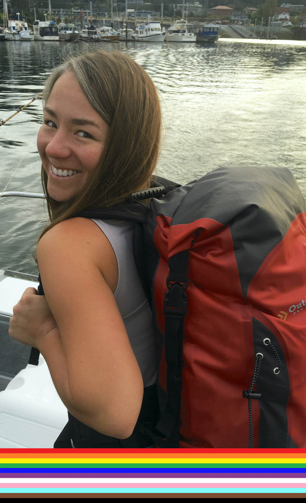

Professional: I am an assistant professor in marine fisheries at Oregon State University (OSU) and principal investigator for the Integrated Marine Fisheries (IMF) Lab. I also serve as the Oregon Department of Fish and Wildlife representative on the Scientific and Statistical Committee for the Pacific Fishery Management Council.
Before starting at OSU, I worked as a research scientist for , a collaboration between the University of Washington and NOAA Fisheries. I earned a PhD in fisheries from the University of Alaska Fairbanks, MS in marine science from Moss Landing Marine Laboratories, and BS in biology from San Diego State University. I've also worked as a program and outreach director in the nonprofit sector, representative for the California Sea Grant Extension Program, and lead scientist for the California Collaborative Fisheries Research Program. Additional information can be found in my curriculum vitae (CV).
I am most interested in work that improves our understanding about harvested stocks, thereby supporting sustainable resource management. To promote success in this arena, I emphasize the value of transdisciplinary collaborations and work to build bridges between ecologists and statisticians, scientists and stakeholders, and students and fishery professionals. Below are some of the most influential people who've helped me prepare to do this work.

Personal: I am originally from California and lived in Alaska for six years (first Juneau, then Sitka, and finally Anchorage). Among my favorite aspects of the 'last frontier' are: incredible access to wild spaces; unbeatable sunsets and skylines; regular eagle, porcupine, bear, moose, and whale sightings; super long summer days; and a plethora of winter activities. I recently moved and am now enjoying the warm temperatures, blue skies, and expansive beaches of coastal Oregon. In my free time, I like to SCUBA dive, snorkel, hike, camp, and travel. That...or spending quality time with my partner, pup, and poopsies (aka cats).
I am passionate about increasing diversity, equity, and inclusion (DEI) in STEM. I also believe in the power of visibility. Thus, I share that I was a first generation college student and am from a working class family. I also identify as a queer, nonbinary woman. I strive to bring my authentic self into every space that I occupy, confront my own implicit biases, reframe my thinking when presented with new information or insights, and use my privilege to support others whenever possible. I integrate DEI efforts into all aspects of my life and am committed to persistent self education so that I may help increase access to fisheries science and related disciplines.
MENTORSRick Starr (MS Advisor)
Lorenzo Ciannelli
Martin Dorn
Tim Essington
Scott Hamilton
Jim Harvey
Kirstin Holsman
Kevin Hovel
Mary Hunsicker
Franz Mueter
Jodi Pirtle
Terry Quinn
Paul Reilly
Chris Rooper
Jim Thorson